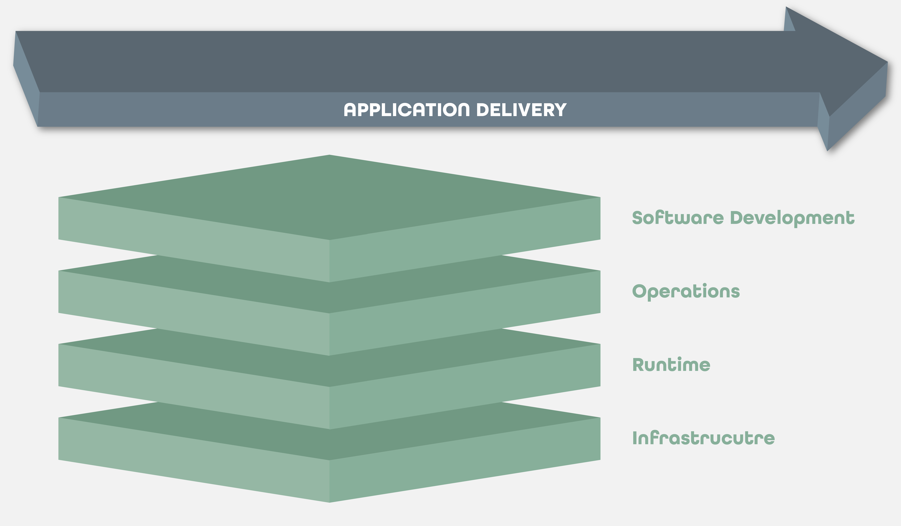

Our Vision
The most enduring and transformative companies use Chef to become fast, efficient, and innovative software driven organizations
Thousands of customers
Every industry, every stage
People
Product
Companies

Build
Deploy
Manage
Enterprise Application Lifecycle

Design for our silo
Forced integration
Big Web Application Lifecycle
Control over the application
The platform is the product
Build
Deploy
Manage

Application Automation
The Production Cliff

Starts with a plan
Simple, native, and declarative
pkg_name=redis
pkg_origin=core
pkg_version=3.0.7
pkg_license=('BSD')
pkg_maintainer="The Habitat Maintainers <humans@habitat.sh>"
pkg_source=http://download.redis.io/releases/${pkg_name}-${pkg_version}.tar.gz
pkg_shasum=b2a791c4ea3bb7268795c45c6321ea5abcc24457178373e6a6e3be6372737f23
pkg_bin_dirs=(bin)
pkg_build_deps=(core/make core/gcc)
pkg_deps=(core/glibc)
pkg_svc_run="bin/redis-server $pkg_svc_config_path/redis.config"
pkg_expose=(6379)
do_build() {
make
}
Low abstraction
Complete dependencies
Declare services
Simple functions
Setup hab
Creates an origin
Opt-in analytics
Built in a studio
Clean room environment
Safe by default
Installs dependencies
Includes every option
# Accept connections on the specified port, default is 6379.
# If port 0 is specified Redis will not listen on a TCP socket.
port = 6379
# TCP listen() backlog.
tcp-backlog = 511
# bind = [ "192.168.1.100", "10.0.0.1" ]
# bind = [ "127.0.0.1" ]
# bind = [] - listen on all interfaces
bind = []
timeout = 0
tcp-keepalive = 0
loglevel = "notice"
Human Centric
Supports comments
Complex data structures
Translated with templates
daemonize no
port {{cfg.port}}
tcp-backlog {{cfg.tcp-backlog}}
{{#if cfg.bind}}
bind {{cfg.bind}}
{{/if}}
{{#each cfg.save}}
save {{this.sec}} {{this.keys}}
{{/each}
Minimal
Substitution
Branching & Looping
Lifecycle hooks
#!/bin/sh
# These paths need to exist for nginx to run
mkdir -p \
{{pkg.svc_var_path}}/nginx/fastcgi \
{{pkg.svc_var_path}}/nginx/proxy \
{{pkg.svc_var_path}}/nginx/scgi \
{{pkg.svc_var_path}}/nginx/uwsgi
rm -rf {{pkg.svc_static_path}} && cp -r {{pkg.path}}/dist {{pkg.svc_static_path}}
ln -sf {{pkg.svc_config_path}}/habitat.conf.js {{pkg.svc_static_path}}
daemonize no
Custom behavior
Init, Run
Health
Stored in a depot
Central location
Publicly hosted
Lightweight views
Installed by hab
Easy pattern
Shortcuts
Increasing specificity
Packages on disk
/hab
Binaries and Config
Metadata
Side-by-side
Post-process packages
Any package
Docker
ACI
Mesosphere
Run on any 64-bit Linux
Easily support proprietary software
Supervisor runs services
Installs automatically
Keeps things running
Manages configuration
Data is the API
Environment configuration
Print config options
12-Factor Style
Externally enforced
File configuration
More flexible than environment
Universal location
Externally enforced
Supervisors form a ring

Peers
Service Groups
Gossip
Availability increases with scale
Ring configuration
Supervisors support topologies
Dynamic configuration
Service group level
Uses the Ring
The leader topology
Data is the API
{{#if svc.me.follower}}
{{#with svc.leader}}
slaveof {{ip}} {{port}}
{{/with}}
{{/if}}
No Changes to Applications
Topology
Services
Package Data
Service Discovery
Supervisors provide update strategies

Topology aware
Track views in the depot
Ideal for Continuous Delivery
- Detects when a new release is available
- Works with the service group to deploy it
- You specify the pattern, the supervisors execute it
- Only the first is implemented
Supervisors provide a REST API

External Actors
Health and Status
Supervisor Debugging
Application Automation
Automation travels with the application
Existing & Cloud Native Software
Simplify
Empower
Accelerate
So they can become fast, efficient, and innovative software driven organizations
Available Today
http://www.habitat.sh
One more thing
It's all open source
Apache License
(even the website)Chef customers have support for Habitat today
Much more to do
- Automated, public build service
- More topologies
- More update strategies
- More plans
- More package export formats